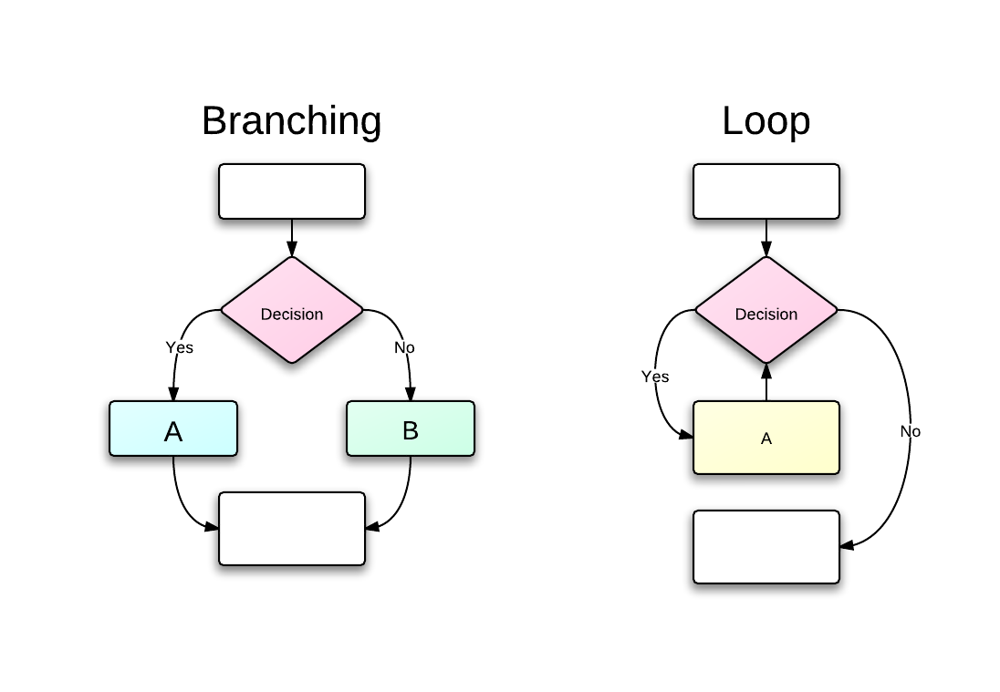

- simple expressions
- 10
- 10 + 2
- 10 + a
- We will learn other forms of expressions through out this course.
- e.g., f(3) : function call
2 a = 3 b = a + 2 print b
- Assignment Statement
- a = (b = 3)
- a = b = 3
- Print Statement
- print 3
- print a

Change order of instructions based on some test
a = 5 remainder = a % 2 if remainder == 1: print "odd" else: print "even"
What happen if we use integer for a test?
a = 5 remainder = a % 2 if remainder: print "odd" else: print "even"
From the Python Language Reference,
if_stmt ::= "if" expression ":" suite ( "elif" expression ":" suite )* ["else" ":" suite]
if a: b = a * 2 c = b + 1
Again, from the Python Language Reference,
if_stmt ::= "if" expression ":" suite ( "elif" expression ":" suite )* ["else" ":" suite] suite ::= stmt_list NEWLINE | NEWLINE INDENT statement+ DEDENT
if a == 1: do_somthing elif a == 2: do_somthing elif a == 3: do_somthing; do_somthing_else elif a == 4: do_somthing else: do_somthing_else
num_moons = 3 while num_moons > 0: print num_moons num_moons -= 1
while_stmt ::= "while" expression ":" suite ["else" ":" suite] break_stmt ::= "break" continue_stmt ::= "continue"
num_moons = -3 while num_moons > 0: print num_moons num_moons -= 1
Use else
num_moons = -3 while num_moons > 0: print num_moons num_moons -= 1 else: print "skipping the loop"
num_moons = 3 while num_moons > 0: print num_moons
num_moons = 3 while True: print num_moons num_moons -= 1 if num_moons > 0: continue else: break
- w/ Else
num = 2 while num <= 10: is_prime = True trial = 2 while trial**2 <= num: if (num % trial) == 0: is_prime = False trial += 1 if is_prime: print num num += 1
- w/ Else
num = 2 while num <= 10: trial = 2 while trial**2 <= num: if (num % trial) == 0: break trial += 1 else: print num num += 1
value = 0. # initial value
residual = 1.e10 # large enough value
old_residual = 1.e11
threshold = 1.e-2 # small enough value
residual = calculate_residual(value)
while redsidual > threshold:
value = update_value(value)
residual = calculate_residual(value)
if residual > old_residual:
print "something went wrong, breaking out of the loop."
break
else:
old_residual = residual
else:
print "residual reached a threshold:", value
| Table of Contents | t |
|---|---|
| Exposé | ESC |
| Full screen slides | e |
| Presenter View | p |
| Source Files | s |
| Slide Numbers | n |
| Toggle screen blanking | b |
| Show/hide slide context | c |
| Notes | 2 |
| Help | h |